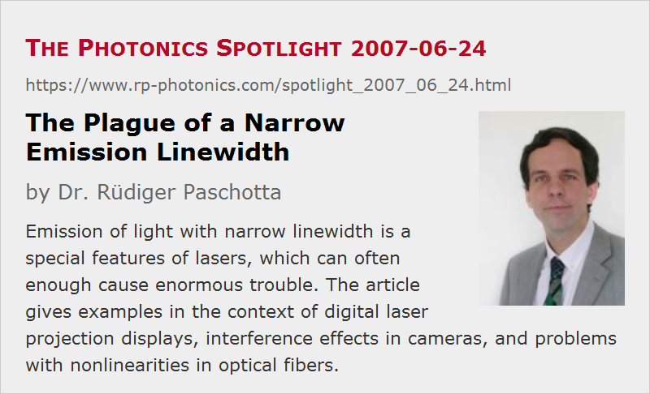

The Plague of a Narrow Emission Linewidth
Posted on 2007-06-24 as a part of the Photonics Spotlight (available as e-mail newsletter!)
Permanent link: https://www.rp-photonics.com/spotlight_2007_06_24.html
Author: Dr. Rüdiger Paschotta, RP Photonics Consulting GmbH
Abstract: Emission of light with narrow linewidth is a special features of lasers, which can often enough cause enormous trouble. The article gives examples in the context of digital laser projection displays, interference effects in cameras, and problems with nonlinearities in optical fibers.

Ref.: encyclopedia articles on linewidth, coherence, interference, laser speckle, narrow-linewidth lasers
Lasers are often celebrated for their narrow emission linewidth, or high spectral brightness. Indeed this is one of the qualities which distinguish laser light from the output of most other light sources. However, a narrow linewidth can also be a plague:
- When using a laser-based RGB source to project digital images on a screen, laser beams with a too high temporal coherence can lead to nasty laser speckle effects. These can to some extent be reduced by optimizing the details of the screen, but the most elegant solution may be to increase the laser linewidth, if that is possible.
- Similar kinds of nasty interference effects occur when taking an image of a laser-illuminated scene with a camera which is not designed for use with narrowband light. For example, any kinds of optical windows can contribute pronounced ring structures which would not occur with broadband light (e.g. daylight). Such effects can render the taken images completely useless, and it can be hard to solve that problem by modifying the camera.
- When sending a laser beam through an optical fiber, stimulated Brillouin scattering can send most light back to the source above a certain threshold power, which can be fairly low for narrowband light. In some cases, one first has to send the light through a modulator, which increases the bandwidth in order to increase the Brillouin threshold. In principle, one may restore the original bandwidth with a second modulator after the fiber.
I have seen quite a few cases where a larger laser linewidth would have helped to avoid a lot of trouble, but was difficult to obtain. For example, it would be nice to have laser diodes emitting e.g. a few milliwatts of power in multiple resonator modes, but only the higher-power versions can usually expected to exhibit multimode emission. Note that operating such a laser only slightly above threshold is no solution, since one will then usually obtain single-mode operation.
This article is a posting of the Photonics Spotlight, authored by Dr. Rüdiger Paschotta. You may link to this page and cite it, because its location is permanent. See also the RP Photonics Encyclopedia.
Note that you can also receive the articles in the form of a newsletter or with an RSS feed.
Questions and Comments from Users
Here you can submit questions and comments. As far as they get accepted by the author, they will appear above this paragraph together with the author’s answer. The author will decide on acceptance based on certain criteria. Essentially, the issue must be of sufficiently broad interest.
Please do not enter personal data here; we would otherwise delete it soon. (See also our privacy declaration.) If you wish to receive personal feedback or consultancy from the author, please contact him e.g. via e-mail.
By submitting the information, you give your consent to the potential publication of your inputs on our website according to our rules. (If you later retract your consent, we will delete those inputs.) As your inputs are first reviewed by the author, they may be published with some delay.
|  |
If you like this page, please share the link with your friends and colleagues, e.g. via social media:
These sharing buttons are implemented in a privacy-friendly way!